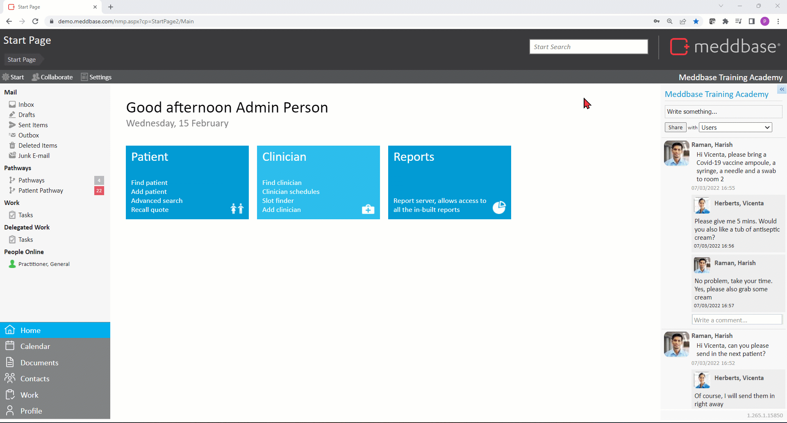
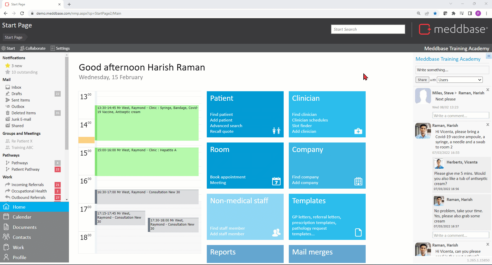
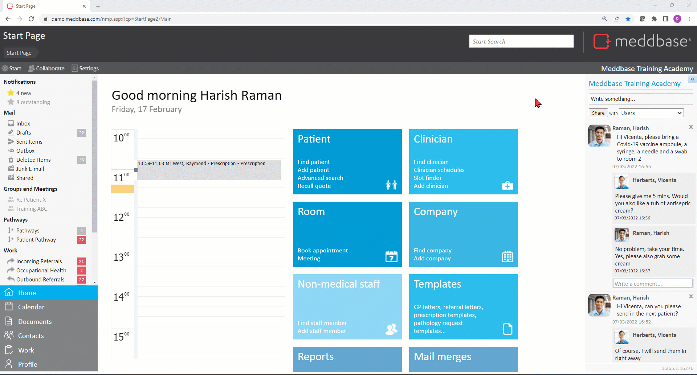
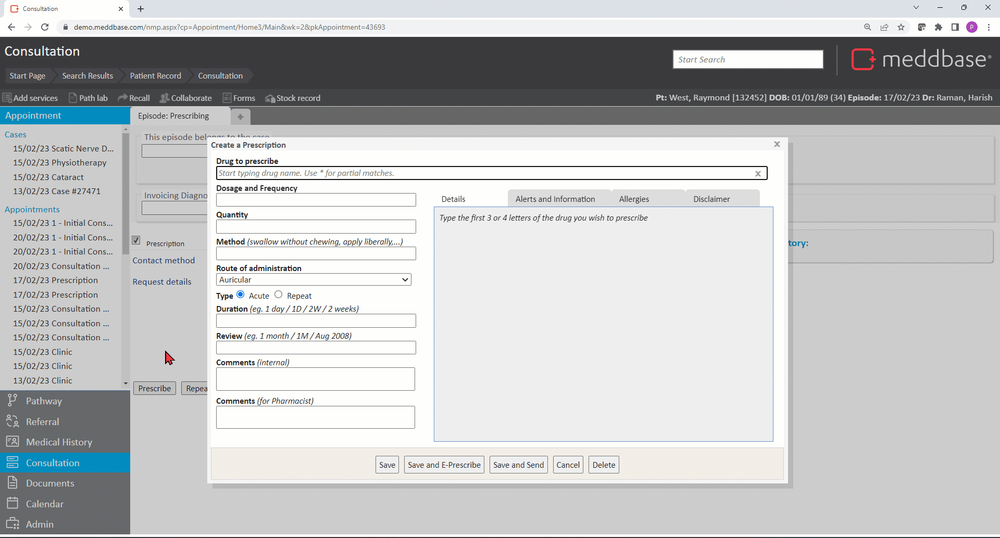
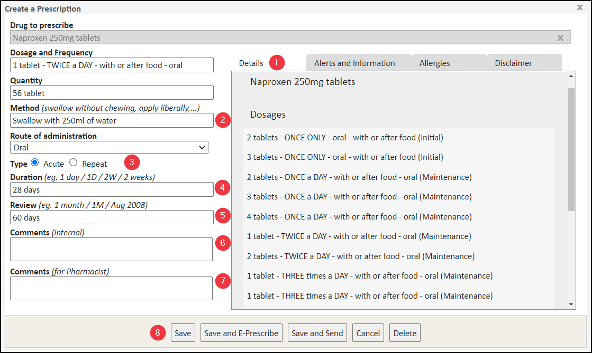

Meddbase has a built-in integration with First Data Bank, who offer a centralised drugs database of over 70,000 drug products and packs. First Data Bank central drug database is updated monthly ensuring that the information in Meddbase is completely up to date.
Acute and repeat prescriptions can be written in the system using the First Data Bank database. Clinical decision support is included with every prescription providing drug to drug interaction, contraindication and allergy warnings amongst others.
This article explores:
This article explores functionality that requires the following configuration pre-requisites:
A common scenario would involve a patient calling in to the clinic to request a prescription. The Meddbase user handling the incoming call can assign a Prescription/Repeat Prescription Task to a doctor. The doctor can subsequently action the task and prescribe* the requested drug.
*Only Medical Persons (Doctors) can prescribe drugs in Meddbase.
To assign a Prescription Task to a doctor following an incoming patient call:

The doctor to whom the Prescription Task was assigned receives a pop-up notification on the top of their screen. They can then action the task from the Work section by:
This opens the Create a Prescription dialog window where the drug can be selected and the preparation details provided. Once ready the Prescription can be:
Prescribers should review the printed prescription prior to printing, e-faxing or tasking it, to ensure that it faithfully and unambiguously communicates the details of the selected medications in a way which can be understood by a dispensing pharmacist.

If the patient contacts a doctor directly, e.g. via phone, the medical professional can start a walk-in appointment, capture notes regarding the patients request on a Clinical form and subsequently prescribe the required drug.
Having answered the patient's call the process is as follows:

In the Create a prescription dialog that appears
1. Type characters for drugs to prescribe (typing in at least 3 letters triggers the drug database search and returns all matching drug derivatives)
2. Select the drug to prescribe from the menu
3. Review any Preparation Warnings that appear. These include sensitivity alerts, drug to drug interaction warnings, as well as other warnings and disclaimers.
The Medical User must click Accept Warnings in order to continue and cannot simply close this window.

Other fields and options in this dialog window allow you to provide important details about the Prescription:

1. The Details tab shows you the recommended dosages and manufacturer’s packs and clicking any of these options automatically populates the corresponding field on the left-hand side. You can also type in your own values in these fields if needed.
2. The Method field allows you to specify how the drug should be taken.
3. The Type for the prescription can be selected as Acute (one-offs) or Repeat (multiple courses will be required).
If the Type is Repeat, the review date is mandatory
4. The Duration field allows stating the length of time this drug will be taken over
5. The Review field allows stating when this drug will be due for a review. Furthermore, providing a review date on an Acute prescription will cause this drug to appear on the list of drugs available to Repeat.
Stating a Review date will cause the drug to become available to repeat. For Repeat prescriptions, stating the Review date is mandatory. For both Acute and Repeat prescriptions, the drug will be added to the Expired prescriptions list past the review date and still be available to repeat.
Both Duration and Review should be expressed in the format of a number followed by either d, w, or m., e.g., 1d = 1 Day, 2m = 2 Months, 6w = 6 Weeks. Alternatively, you can state the exact date as DD/MM/YYY
6. The Comments (internal) field allows adding a note or comment visible on the prescription entry in the patient's medical history
7. The Comments (Pharmacist) field allows adding a note or comment visible on the prescription printout
8. A range of actions offered at the bottom of the dialog as buttons. These are explained in the table below:
| Button | Outline explanation |
| Save | Creates a prescription record for the patient. When created, the prescription is logged in the Medical History of the patient. |
| Save and E-Prescribe | By selecting this option, a Send electronic prescription dialog is presented. This enables the production of an ePrescription using the Medication Delivery feature. When created, the prescription is logged in the Medical History of the patient. |
| Save and Send | Creates a prescription record for the patient and enables a printout of the prescription to be produced. When created, the prescription is logged in the Medical History of the patient. |
| Cancel | Closes the Create a Prescription dialog and returns to Prescription Task Dialog. |
| Delete | At this point, if the Delete button is selected an advisory message appears saying that a prescription has not been created to delete. Once a prescription is created and edited, this button enables you to mark the prescription as deleted (although it is visible in the ‘Deleted’ section of the Medical History). |
Once finished click Discharge on the Clinical Form to end the walk-in appointment.